前言
从 https://mp.weixin.qq.com/debug/wxadoc/dev/framework/view/ 逻辑层到视图层的WXML的笔记整理
逻辑层
小程序开发的逻辑层由javascript编写，逻辑层将数据处理之后发给视图层，同时接受视图层的事件反馈。
在javascript的基础上，微信小程序做了一些修改:
- 增加了App和Page方法,进行程序和页面的注册。
- 增加getApp和getCurrentPages方法，分别用来获得app实例和当前页面栈。
- 由于框架并非运行在web上，所以javascipt在web上的一些功能都无法使用，如document和window。
注册程序
App(): 用来注册一个小程序，接受一个object参数，其指定了小程序的声明周期函数等。
getApp(): 全局的getApp()函数可以用来获得一个小程序实例。
caution：
- App()必须在app.js中注册，且不能注册多个。
- 不要在定义于 App() 内的函数中调用 getApp() ，使用 this 就可以拿到 app 实例。
注册页面
Page()：用来注册一个页面，接受一个object参数，指定页面的初始数据，生命周期函数，事件处理函数等。
初始化数据: 初始化数据将作为页面的第一次渲染，data将会以JSON的形式从逻辑层传递到渲染层，所以其数据必须是可以转成 JSON 的格式：字符串，数字，布尔值，对象，数组。渲染层可通过WXML对数据进行绑定。
生命周期函数：
onReady:页面初次渲染完成，一个页面只会调用一次，代表页面已经准备妥当，可以和视图层进行交互。
页面相关事件处理函数：
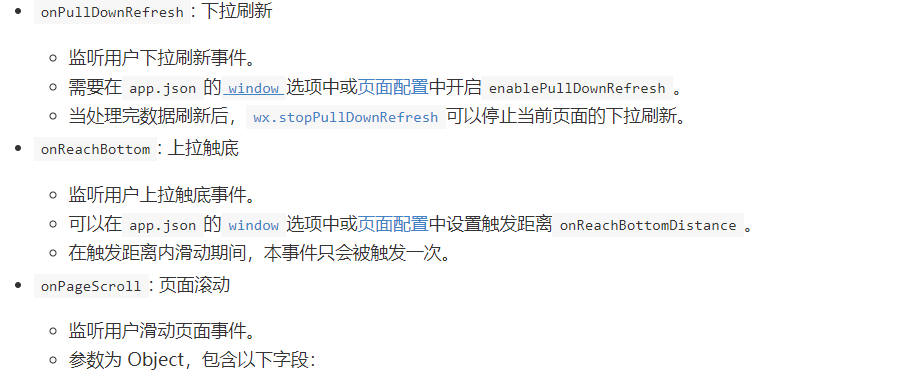
事件处理函数：
出了初始化数据和生命周期函数，Page中还可以定义一些特殊的函数：事件处理函数。在渲染层可以在组件中加入事件绑定当达到触发事件时，就会执行Page中定义的事件处理函数
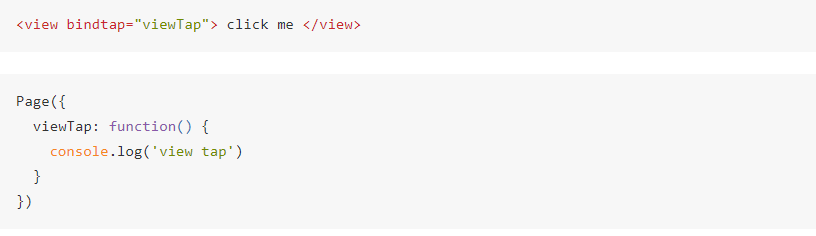
Page.prototype.setData(): setData函数用于将数据从逻辑层发送到视图层（异步），同时改变对应的this.data的值（同步）。
模块化
模块化：可以对一些公共的代码抽象成单独的js文件，作为一个模块。模块只有通过module.exports或者exports才能对外暴露接口。
caution:
- exports是对module.exports的引用。因此在模块里随意更改exports的指向会造成未知的错误，所以更推荐使用module.exports来暴露模块接口
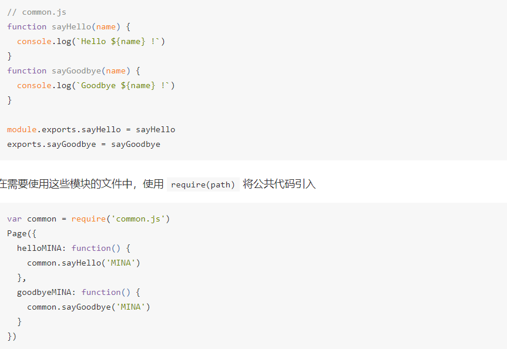
视图层
框架的视图层由WXML和WXSS编写，由组件来进行展示。将逻辑层的事件反应成视图，同时将视图层的事件发送给逻辑层。
WXML(WeiXin Markup language)用于描述页面的结构,WXS(WeiXin Script)是小程序的一套脚本语言，结合WXML可以构建出页面的结构，WXSS(WeiXin Style Sheet)用于描述页面的样式，组件是(component)是视图的基本组成单元
WXML
这是框架设计的一套标签语言，可以构建出页面的结构(类似html)
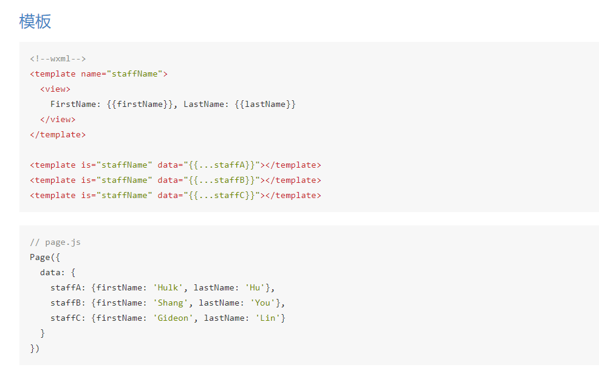
数据绑定
WXML中的动态数据均来自对应Page中的data。
数据绑定使用Mustache语法（双大括号）将变量包起来，可以作用于：
内容：
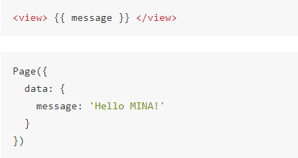
组件属性(需要在双引号之间)：
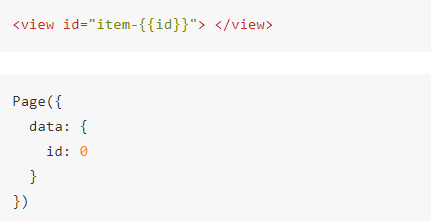
控件属性(需要在双引号之间)：
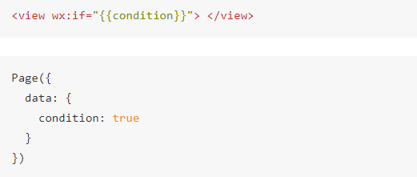
关键字(需要在双引号之间)
运算：可以在{ {} }内进行简单的运算
组合：也可以在Mustache内直接进行组合，构成新的对象或数组
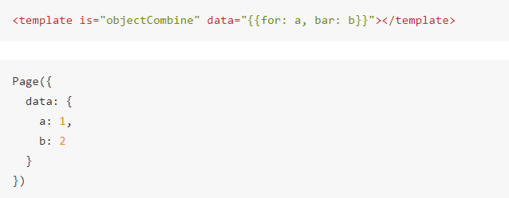
最终组合成的对象是{for:1,bar:2}
也可以用扩展运算符…来将一个对象展开
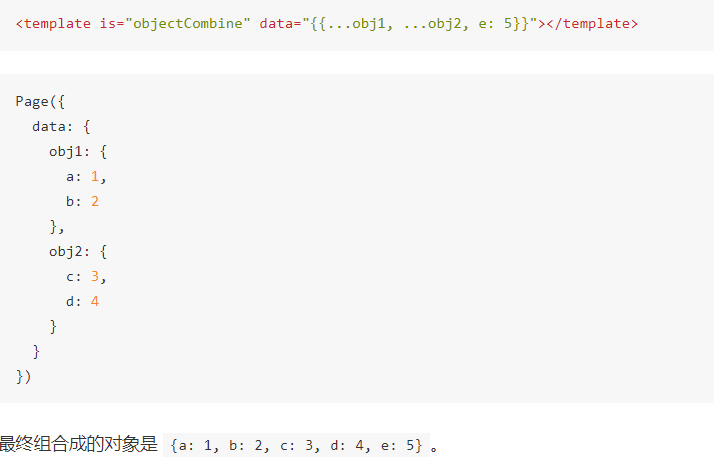
caution：如果存在变量名相同的情况，后面的会覆盖前面。
列表渲染
wx:for:在组件上使用wx:for控制属性绑定一个数组，即可使用数组中各项的数据重复渲染该组件。默认数组的当前项下标变量名默认为index,数组当前项变量名默认为item。
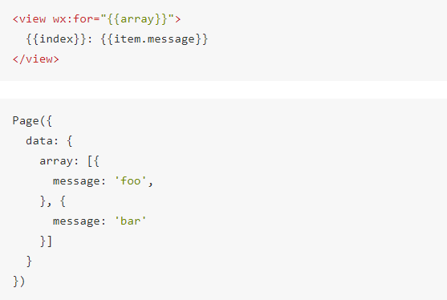
使用wx:for-item可以指定数组当前元素的变量名，使用wx:for-index可以指定数组当前下标的变量名。
<view wx:for="{ {array} }" wx:for-index="idx" wx:for-item="itemName">
{ {idx} }: { {itemName.message} }
</view>wx:for也可以嵌套，下面是一个九九乘法表
<view wx:for="{ {[1, 2, 3, 4, 5, 6, 7, 8, 9]} }" wx:for-item="i">
<view wx:for="{ {[1, 2, 3, 4, 5, 6, 7, 8, 9]} }" wx:for-item="j">
<view wx:if="{ {i <= j} }">
{ {i} } * { {j} } = { {i * j} }
</view>
</view>
</view>block wx:for:类似block wx:if ，也可以将wx:for用在<block/>标签上，用来渲染包含多节点的结构块
<block wx:for="{ {[1, 2, 3]} }">
<view> { {index} }: </view>
<view> { {item} } </view>
</block>wx:key:如果列表中项目得位置会动态改变或者有新的项目添加到列表中，并且希望列表中的项目保持自己的特征和状态(如<input/>中的输入内容，<switch>的选中状态，需要使用wx:key来指定列表中项目的唯一的标识符)
wx:key的值以两种方式提供：
- 字符串，代表for循环array中item的某个property,它需要是列表中唯一的字符串或数字且不能动态改变。
- 保留关键字
*this代表for循环中的item本身，这种需要item本身是一个唯一的字符串或者数字.
当数据改变触发渲染层重新渲染时会校正带有key的组件，框架确保他们重新排序而不是创建，以确保组件自身的状态。
<switch wx:for="{ {objectArray} }" wx:key="unique" style="display: block;"> { {item.id} } </switch>
<button bindtap="switch"> Switch </button>
<button bindtap="addToFront"> Add to the front </button>
<switch wx:for="{ {numberArray} }" wx:key="*this" style="display: block;"> {{item}} </switch>
<button bindtap="addNumberToFront"> Add to the front </button>Page({
data: {
objectArray: [
{id: 5, unique: 'unique_5'},
{id: 4, unique: 'unique_4'},
{id: 3, unique: 'unique_3'},
{id: 2, unique: 'unique_2'},
{id: 1, unique: 'unique_1'},
{id: 0, unique: 'unique_0'},
],
numberArray: [1, 2, 3, 4]
},
switch: function(e) {
const length = this.data.objectArray.length
for (let i = 0; i < length; ++i) {
const x = Math.floor(Math.random() * length)
const y = Math.floor(Math.random() * length)
const temp = this.data.objectArray[x]
this.data.objectArray[x] = this.data.objectArray[y]
this.data.objectArray[y] = temp
}
this.setData({
objectArray: this.data.objectArray
})
},
addToFront: function(e) {
const length = this.data.objectArray.length
this.data.objectArray = [{id: length, unique: 'unique_' + length}].concat(this.data.objectArray)
this.setData({
objectArray: this.data.objectArray
})
},
addNumberToFront: function(e){
this.data.numberArray = [ this.data.numberArray.length + 1 ].concat(this.data.numberArray)
this.setData({
numberArray: this.data.numberArray
})
}
})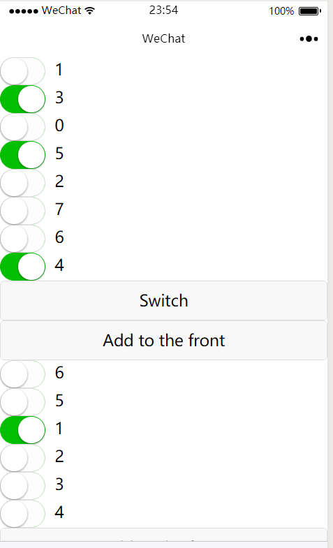
条件渲染
wx:if：在框架中使用wx:if=""来判断是否需要渲染该代码块。
<view wx:if="{ {condition} }"> True </view><view wx:if="{ {length > 5} }"> 1 </view>
<view wx:elif="{ {length > 2} }"> 2 </view>
<view wx:else> 3 </view>block wx:if: 可以使用 <block/>标签将多个组件包装起来
模板
WXML提供模板(template),可以在模板中定义代码片段然后在不同的地方调用。
定义模板: 使用name属性作为模板的名字。
<!--
index: int
msg: string
time: string
-->
<template name="msgItem">
<view>
<text> { {index} }: { {msg} } </text>
<text> Time: { {time} } </text>
</view>
</template>使用模板：使用is属性，声明需要的使用的模板，然后将所需要的data传入
<template is="msgItem" data="{ {...item} }"/>Page({
data: {
item: {
index: 0,
msg: 'this is a template',
time: '2017-12-30'
}
}
})is属性可以使用Mustache语法，来动态决定具体需要渲染哪个模板
<template name="odd">
<view> odd </view>
</template>
<template name="even">
<view> even </view>
</template>
<block wx:for="{ {[1, 2, 3, 4, 5]} }">
<template is="{ {item % 2 == 0 ? 'even' : 'odd'} }"/>
</block>事件
事件是视图层到逻辑层的通讯方式，它可以将用户的行为反馈到逻辑层处理，事件对象可以携带额外信息，如id,dataset,touches等。
事件的使用方式：
- 在组件中绑定一个事件处理函数，如bindtap，当用户点击该组件时会在该页面对应的Page中找到相应的事件处理函数。
<view id="tapTest" data-hi="WeChat" bindtap="tapName"> Click me! </view>
Page({
tapName: function(event) {
console.log(event)
}
})- 可以看到log出来的信息如下
{ "type":"tap", "timeStamp":895, "target": { "id": "tapTest", "dataset": { "hi":"WeChat" } }, "currentTarget": { "id": "tapTest", "dataset": { "hi":"WeChat" } }, "detail": { "x":53, "y":14 }, "touches":[{ "identifier":0, "pageX":53, "pageY":14, "clientX":53, "clientY":14 }], "changedTouches":[{ "identifier":0, "pageX":53, "pageY":14, "clientX":53, "clientY":14 }] }
事件详解：
- 冒泡事件：当一个组件上的事件被触发后，该事件会向父节点传递。
- 非冒泡事件：当一个组件上的事件被触发后，不会向父节点传递。
事件的绑定和冒泡：事件绑定的写法同组件的属性，以key,value的形式。
- key以 bind 或 catch 开头然后跟上事件的类型，如bindtap,catchtouchstart。自基础库1.5.0起，bind和catch后可以紧跟一个冒号，其含义不变，如bind:tap。
- value 是一个字符串，需要在对应的Page中定义同名的函数。不然会报错。
<view id="outer" bindtap="handleTap1">
outer view
<view id="middle" catchtap="handleTap2">
middle view
<view id="inner" bindtap="handleTap3">
inner view
</view>
</view>
</view>上面的例子中点击inner view会调用handleTap3和handleTap2,因为tap事件会冒泡传递到middle view而catch事件不会传递，所以就在这中断了。
事件的捕获阶段：
（相当于先从外层开始调用）捕获阶段位于冒泡阶段之前，在捕获阶段中，事件到达节点的顺序和冒泡节点相反，可以采用capture-bind,capture-catch关键字，后者将中断捕获阶段和取消冒泡阶段。
<view id="outer" bind:touchstart="handleTap1" capture-bind:touchstart="handleTap2">
outer view
<view id="inner" bind:touchstart="handleTap3" capture-bind:touchstart="handleTap4">
inner view
</view>
</view>点击inner view 会先后调用handleTap2 handleTap4 handleTap3 handleTap1。
如果将上面代码中第一个capture-bind改为capture-catch将只触发 handleTap2。
事件对象：当组件触发事件时，逻辑层绑定该事件的处理函数会收到一个事件对象。
BaseEvent基础事件对象属性: type, timeStamp, target(触发事件的源组件), currentTarget(事件绑定的当前组件)。
TouchEvent触摸事件对象属性: touches, changedTouches。
caution：
- 上例中，点击 inner view 时，handleTap3 收到的事件对象 target 和 currentTarget 都是 inner，而 handleTap2 收到的事件对象 target 就是 inner，currentTarget 就是 middle。
- dataset: 在组件中可以定义数据, 这些数据会通过事件传递给SERVICE(逻辑层)，以data-开头，多个单词以-链接，不能有大写(会自动转换为小写)。
<view data-alpha-beta="1" data-alphaBeta="2" bindtap="bindViewTap"> DataSet Test </view>Page({
bindViewTap:function(event){
event.currentTarget.dataset.alphaBeta === 1 // - 会转为驼峰写法
event.currentTarget.dataset.alphabeta === 2 // 大写会转为小写
}
})引用
WXML提供两种文件引用方式 import和include1。
import: import可以在文件中使用目标文件定义的template:
<!-- item.wxml -->
<template name="item">
<text>{{text}}</text>
</template>在index.wxml中引用了item.wxml就可以使用item模板:
<import src="item.wxml"/>
<template is="item" data="{{text: 'forbar'}}"/>import的作用域:import只会import 目标文件中的template而不会import 目标文件import 的template（我的封臣的封臣不是我的封臣）
inclue: include可以将目标文件除了 <template/> <wxs/>以外的整个代码引入，相当于拷贝了一下。
<!-- index.wxml -->
<include src="header.wxml"/>
<view> body </view>
<include src="footer.wxml"/>
<!-- header.wxml -->
<view> header </view>
<!-- footer.wxml -->
<view> footer </view>